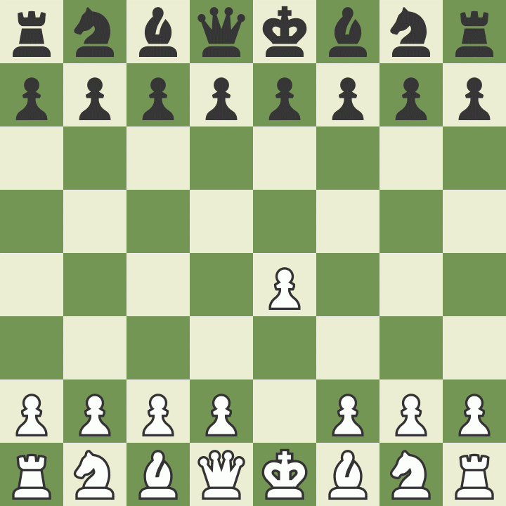
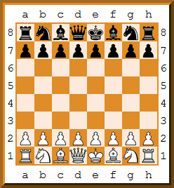
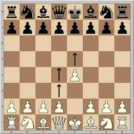
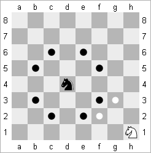
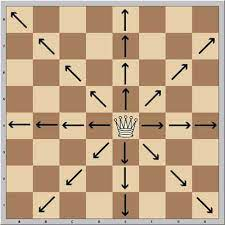
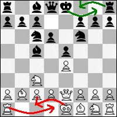

Bienvenue sur un mini site d'introduction aux échecs
Sommaire :
- I - Présentation Globale
- 1 - Le plateau
- 2 - Les pièces
- a - Le pion
- b - Le fou
- c - Le cavalier
- d - La tour
- e - La reine
- f - Le roi
- 3 - Le but du jeu
- II - Règles complémentaires
- 1 - Les différents types d'égalité
- a - L'égalité par manque de matériel
- b - L'égalité par consentement mutuel
- c - L'égalité par répétition
- d - La règle des 50 coups
- e - Le Pat
- 2 - Les mouvements spéciaux
- a - La prise en passant
- b - Le Roque

Présentation globale
Le plateau

Le plateau aux échecs est composé de 64 cases. Il s'agit d'un carré de 8x8.
Les colonnes sont désignées par des lettres allant de a à h et les lignes sont désignées par des chiffres allant de 1 à 8.
Le plateau est un damier qui alterne entre case claire et case sombre.
Exemple : Le roi noir commence la partie en e8 et la reine blanche commence la partie en d1
Les pièces
Chaque pièce dispose de mouvements spécifiques
Le pion

Chaque joueur dispose de 8 pions en début de partie.
Le pion ne peut avancer qu'à la verticale et il ne peux avancer qu'en direction du camp adverse.
Si un pion n'a pas encore bougé dans la partie, il peut avancer de deux cases. Sinon il ne peut avancer que d'une case par mouvement.
Le pion ne peut capturer une pièce adverse qu'en diagonale devant lui.
Exemple : si un pion blanc se trouve en e4, il ne peut capturer que les pièces adverses présentes en d5 et en f5.
A l'inverse si le pion en e4 est noir il ne peut capturer que les pièces adverses présentes en d3 et en f3.
Le fou
Le fou ne peut se déplacer qu'en diagonale et, comme toutes les pièces, capture une pièce adverse en prenant sa place.
Chaque camp dispose donc d'un fou qui restera sur les cases claires et d'un fou qui restera sur les cases sombres.
Le fou peut se déplacer d'autant de cases vides qu'il le souhaite.
Contrairement au cavalier, le fou ne peut pas se déplacer sur une case si une pièce adverse ou alliée se trouve sur le chemin.
Le cavalier

Le cavalier est la seule pièce aux échecs qui peut se déplacer par dessus les pièces adverses et alliés.
Il se déplace en "L", il peut potentiellement se déplacer sur 8 cases (sauf si elles sont occupées par des pièces alliées ou si il est trop proche du bord).
Voir image ci-dessus pour clarification des possibilités de déplacements
La tour
La tour se déplace à l'horizontal ou à la verticale.
Tout comme le fou il peut se déplacer d'autant de cases vides qu'il le souhaite.
La reine

C'est la pièce la plus puissante aux échecs.
Elle se déplace à l'horizontal, à la verticale ou en diagonale.
Elle possède la capacité de déplacement d'une tour et d'un fou, et tout comme eux, peut se déplacer d'autant de cases vides qu'elle le souhaite.
Le roi
Pour finir le roi est la pièce la plus importante.
C'est le roi que l'on cherche à défendre tout en essayant d'attaquer le roi adverse.
Le roi peut se déplacer dans toutes les directions, comme une reine, mais ne peut se déplacer que d'une case à la fois.
Le roi ne peut pas capturer le roi adverse, en effet, si il s'approche du roi adverse il sera lui même capturable et un roi ne peut pas se mettre en danger.
Le but du jeu
Aux échecs le but du jeu est de capturer le roi adverse.
Si un roi est menacé de capture par une pièce adverse il y a "échec au roi" ou plus simplement "échec".
Lorsqu'il y a "échec", le joueur dont le roi est menacé ne peut jouer que des mouvements qui vont mettre son roi hors de danger.
La partie s'arrête si un joueur n'a aucune possibilité pour défendre son roi ou le mettre hors de danger. Il y a alors "échec et mat".
Règles complémentaires
Les différents types d'égalité
L'égalité la plus évidente est si il ne reste plus que son roi à chaque joueur mais il existe d'autres situations où il y a match nul :
- L'égalité par manque de matériel
- L'égalité par consentement mutuel
- L'égalité par répétition
- La régle des 50 coups
- Le Pat
L'égalité par manque de matériel
Il y a égalité si un joueur est dans l'impossibilité de mater son adversaire.
Cela se produit en roi contre roi, roi et fou contre roi et en roi et cavalier contre roi.
L'égalité par consentement mutuel
A tout moment de la partie, un joueur peut proposer la nulle.
Si son adversaire accepte, la partie est fini et il y a égalité.
L'égalité par répétition
Si une position sur le plateau est répétée trois fois de suite, c'est à dire si les pièces noirs et blanches se retrouvent à des positions identiques.
La partie est nulle par répétition.
La règle des 50 coups
Cette égalité est la moins commune aux échecs.
Si 50 coups se passent sans qu'un pion soit avancé ou qu'une pièce soit prise (25 coups par joueur), il y a égalité.
Le Pat
Si un joueur n'a aucun mouvement possible à son tour de jeu et que son roi n'est pas en échec, il y a Pat.
La partie est donc déclarée nulle.
Les mouvements spéciaux
Le Roque
C'est le seul mouvement aux échecs qui permet de bouger deux pièces d'un coup.
Il concerne le roi et la tour et il ne peut s'effectuer que si les deux pièces n'ont pas bougé depuis le début de la partie.
Il consiste à avancer le roi de deux cases vers la tour concernée et de placer la tour sur la première case parcourue.

Sur l'image on peut voir les deux types de roque possible : le petit roque du côté noir et le grand roque du côté blanc.
Pour effectuer un roque, toutes les cases entre le roi et la tour doivent être vides.
Il faut également que le roi ne soit en échec, ni itialement, ni sur les deux cases qu'il parcourt.
La prise en passant
C'est le seul coup aux échecs où une pièce adverse est prise sans que notre pièce ne se retrouve sur sa case.
Elle concerne uniquement les pions et est assez rare.
Pour pouvoir effectuer un "en passant" il faut qu'un pion adverse avance de deux cases et se retrouve à l'horizontal juste à côté d'un de nos pions
Le pion peut alors capturer cette pièce en se positionnant en diagonal sur la première case parcouru par le pion adverse.